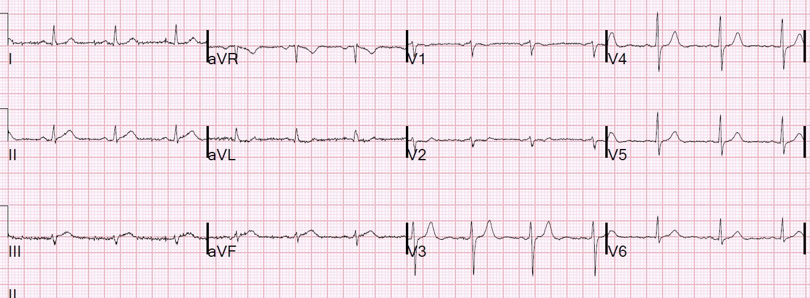
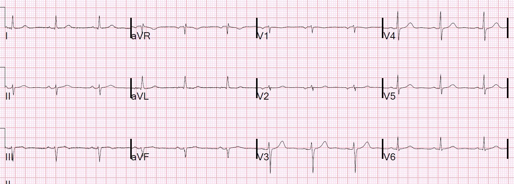
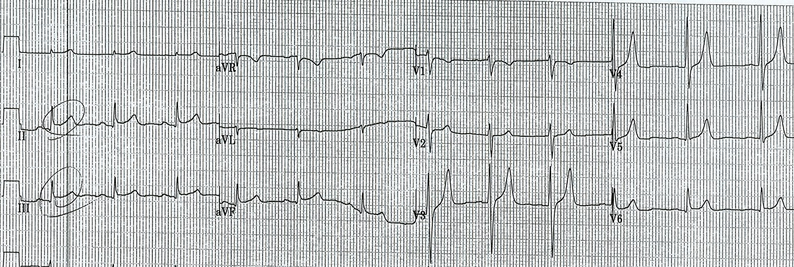
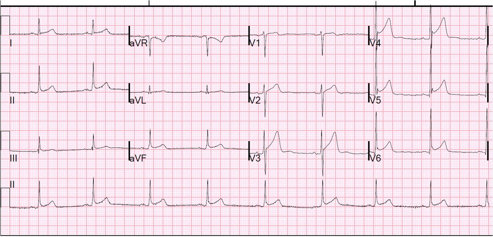
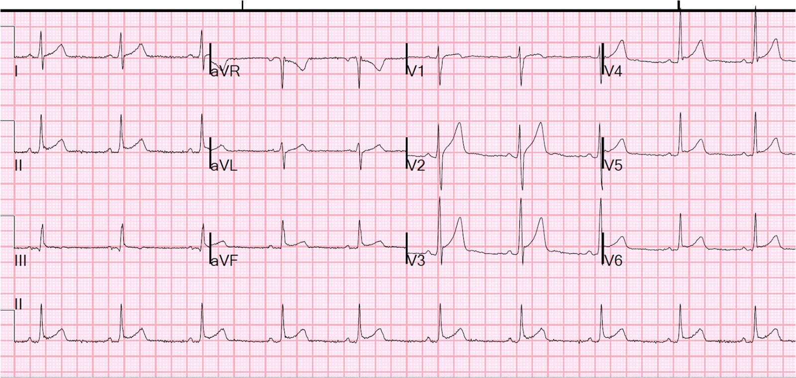
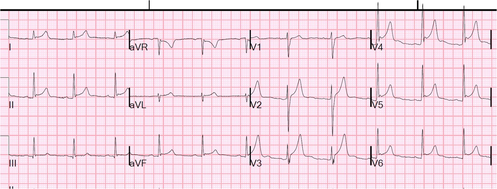
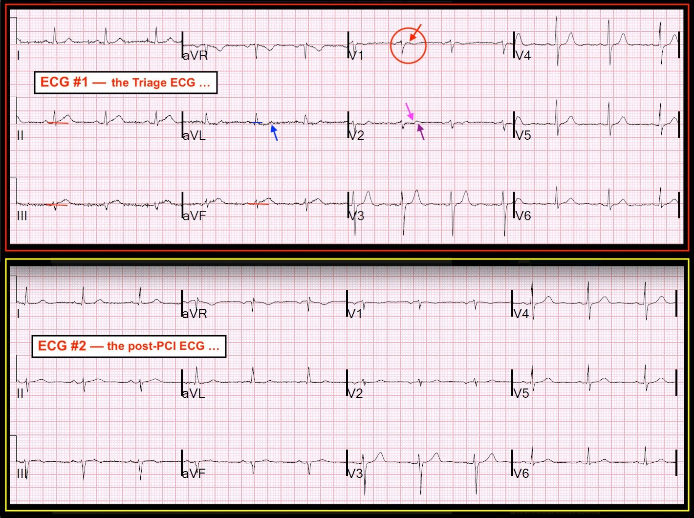
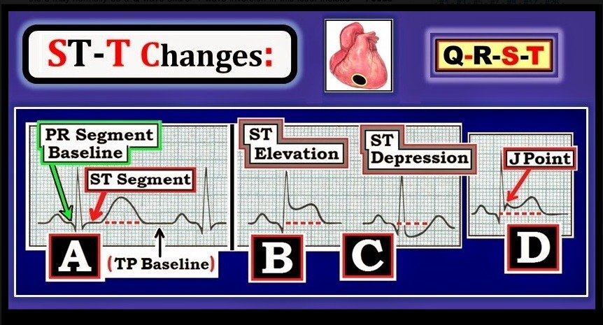

14/10/2018 — Điện tâm đồ này, ghi tại khu phân loại (triage), được đưa cho tôi xem ngay lập tức, không kèm thông tin gì khác…
Bản dịch tiếng Việt của bài "This ECG, recorded in triage, was shown to me immediately, with no other info….." – Dr. Smith’s ECG Blog. Giữ nguyên toàn bộ 14 hình ảnh của bản gốc.
Điện tâm đồ này, ghi tại khu phân loại (triage), được đưa cho tôi xem ngay lập tức, không kèm thông tin gì khác…..


Kết quả đọc bằng máy tính là: “ST chênh xuống mức độ vừa”
Tôi nói:
“OMI thành dưới (nhồi máu cơ tim do tắc – Occlusion Myocardial Infarction – xem Tuyên ngôn OMI (Manifesto)). Kích hoạt phòng thông tim (cath lab).”
Dr. Laura Schrag cũng đã nhận ra điều này ngay lập tức và đó là lý do cô ấy đưa nó cho tôi xem.
Rồi tôi hỏi: “Đau ngực à? Bệnh sử có điển hình không?”
Trả lời: Bệnh nhân là một phụ nữ khoảng 60 tuổi có 3 yếu tố nguy cơ, bị đau ngực ngắt quãng (stuttering) trong một tuần, nay đau liên tục.
Điều gì khiến điện tâm đồ này mang tính chẩn đoán OMI khi ST chênh lên chưa tới 0.5 mm?
–ST chênh lên lớn so với kích thước QRS (QRS ở trên rất nhỏ)
–Sóng T “đầy đặn” (bulky)
–Không có hình dạng lõm hướng lên (upward concavity) của đoạn ST (chính điều này làm cho sóng T đầy đặn)
–ST chênh xuống soi gương (reciprocal) ở aVL
–Sóng T dạng xuống-lên (down-up) ở V2 (gợi ý nhồi máu cơ tim thành sau)
Một lưu ý về độ đặc hiệu của các dấu hiệu này:
Tôi đăng ở đây rất nhiều điện tâm đồ OMI tinh tế mà mọi người đưa tôi xem hoặc gửi cho tôi. Tôi chưa đăng đủ các ca ÂM TÍNH một cách tinh tế. Với tuyệt đại đa số các ca được nhắn tin cho tôi hoặc đưa tôi xem trực tiếp mà các bác sĩ đang lo lắng, tôi trả lời họ: “Cái này không đáng lo. KHÔNG kích hoạt phòng thông tim.” Tôi luôn nói thêm: “Điện tâm đồ có thể bình thường trong bối cảnh OMI, nên tôi không thể nói là không có OMI; tôi chỉ có thể nói rằng nó không biểu hiện trên điện tâm đồ. Nếu bạn lo lắng, hãy làm các điện tâm đồ liên tiếp, siêu âm tim, v.v.”
Nhưng trong ca này, nó chắc chắn biểu hiện, và các dấu hiệu RẤT đặc hiệu. Trong ca này, bác sĩ can thiệp (một người tuyệt vời và là bạn của tôi) đã ghi trong ghi chú của anh ấy “Thay đổi ST không đặc hiệu.” Nhiều hoặc hầu hết bác sĩ sẽ gọi đây là “Bất thường ST-T không đặc hiệu.” Nhưng đây chắc chắn KHÔNG phải là các dấu hiệu “Không có giá trị chẩn đoán”. Chúng không phải là “Không đặc hiệu.”
Bệnh nhân được đưa vào phòng thông tim và có tổn thương RCA mờ (hazy) hẹp 95%, đã được đặt stent.
Đây là điện tâm đồ sau PCI:


Dưới đây là một loạt điện tâm đồ có ST chênh lên thành dưới BÌNH THƯỜNG (ST chênh lên biến thể bình thường):
Tôi nhắc lại:
Bạn có thể thấy từ các điện tâm đồ bên dưới rằng ST chênh lên bình thường có thể chênh rất cao, trong khi ca ở trên hầu như không có ST chênh lên. Chính các đặc điểm KHÁC NGOÀI ST CHÊNH LÊN mới đánh dấu ca ở trên là nhồi máu cơ tim cấp, và các ca bên dưới KHÔNG phải nhồi máu cơ tim cấp.
Đây là các đặc điểm của OMI so với ST chênh lên bình thường:
–ST chênh lên lớn so với kích thước QRS (QRS ở trên rất nhỏ)
–Sóng T “đầy đặn” (bulky)
–Không có hình dạng lõm hướng lên của đoạn ST (chính điều này làm cho sóng T đầy đặn)
–ST chênh xuống soi gương ở aVL
–Sóng T dạng xuống-lên ở V2 (gợi ý nhồi máu cơ tim thành sau)
ST chênh lên lan tỏa. Kích hoạt phòng thông tim?

Ca 2 và 3.
ST chênh lên thành dưới: chẩn đoán là gì?
Ca 2

Ca 3.


Rõ ràng đây không phải là OMI.
Ca 4. và 5., ở cuối bài này:
Đau ngực ở một nam giới độ tuổi 20; ST chênh lên thành dưới: được chẩn đoán “tái cực sớm” ở các chuyển đạo dưới. Có đúng vậy không?
Ca 4.


Ca 5.


Ca 6.
ST chênh lên tăng dần. STEMI hay tái cực sớm động (dynamic) hay viêm màng ngoài tim.


Ca 7.
Ngay cả khi có ST chênh lên ở V5 & V6, ST chênh lên thành dưới mà không có ST chênh xuống soi gương ở aVL thì ít có khả năng là STEMI

Ca 8. Ở cuối bài này.
Ngay cả khi có ST chênh lên ở V5 & V6, ST chênh lên thành dưới mà không có ST chênh xuống soi gương ở aVL thì ít có khả năng là STEMI


———————————————————–
Bình luận của KEN GRAUER, MD (14/10/2018):
———————————————————–
Một bài blog quan trọng của Dr. Smith — bài này ngay lập tức củng cố cho bài đăng ngày 9 tháng Mười năm 2018 của anh ấy, trong đó chúng tôi nhấn mạnh tầm quan trọng của điện tâm đồ lúc phân loại (triage) được đọc bởi một bác sĩ lâm sàng có năng lực, thành thạo đọc điện tâm đồ (bất chấp một số bài báo đã công bố cho kết quả ngược lại).
- Tôi tập trung bình luận ở đây vào một số chi tiết tinh tế bổ sung, xác nhận vì sao điện tâm đồ ban đầu trong ca này (ghi tại khu phân loại) — có giá trị khẳng định chẩn đoán OMI (Hình 1):


=========================
Điện tâm đồ #1 = điện tâm đồ lúc phân loại ban đầu (TRÊN) — Dưới đây tôi nhắc lại (và minh họa trong Hình 1) các điểm Dr. Smith đã nêu ở trên, cùng với một số điểm bổ sung:
- Biên độ QRST ở các chuyển đạo dưới thường khá khiêm tốn. Do đó, OMI có thể không tự bộc lộ bằng mức ST chênh lên nhiều như được ghi trong một số “hướng dẫn”. Thay vào đó, HÌNH DẠNG của ST-T trở nên có tầm quan trọng hàng đầu — cùng với việc lồng ghép vào “phân tích tổng thể (Gestalt)” của chúng ta về mức độ tương đối của độ lệch ST-T trong những trường hợp biên độ QRS chỉ ở mức khiêm tốn.
- Các bác sĩ lâm sàng còn tranh luận nên dùng đường nền đoạn PR hay TP để đánh giá mức độ lệch của đoạn ST (Hình 2). CẢ HAI đều có thể đúng — tùy vào ca cụ thể. Có thể có nhiễu hoặc trôi đường nền đáng kể làm mờ việc xác định đâu là “đường nền” trên một bản ghi nhất định. Tôi ưu tiên đường nền đoạn PR ở những bản ghi mà mốc này rõ ràng — đồng thời lưu ý rằng đoạn PR thường ngắn lại (và không phải lúc nào cũng thẳng) khi tần số tim tăng. Các bác sĩ lâm sàng khác lại ưu tiên đường nền TP. ĐỀ XUẤT: Hãy cởi mở trong việc dùng đoạn PR hoặc đoạn TP làm “đường nền” của bạn — và đôi khi (khi có nhiều nhiễu/trôi đường nền) dùng “trung bình tổng thể (Gestalt)” của cả hai khi không đoạn nào rõ ràng. (BẤM VÀO ĐÂY — để xem nguồn của Hình 2).


Tiếp tục bàn luận về các thay đổi điện tâm đồ tinh tế trong Hình 1:
- Có nhiễu đường nền đáng kể trong Hình 1. Dù vậy, tôi tin rằng chúng ta vẫn có thể xác định đường nền một cách tự tin. Tôi đã vẽ các đường ngang màu ĐỎ tương ứng với đường nền đoạn PR. Dựa vào các đường này — có ST chênh lên ở mỗi chuyển đạo trong 3 chuyển đạo dưới. Mức ST chênh lên tương đối này bằng ~50% chiều cao của các sóng r rất nhỏ ở chuyển đạo III và aVF, điều này chắc chắn có ý nghĩa lâm sàng!
- LƯU Ý: Ngay cả khi bạn chọn đường nền TP thay vì đường nền PR — vẫn có ST chênh lên với đoạn khởi đầu ST thẳng , và sóng T trông có vẻ tối cấp ở mỗi chuyển đạo trong 3 chuyển đạo dưới trên điện tâm đồ #1 của Hình 1.
- Dù tinh tế — có ST chênh xuống nhẹ ở chuyển đạo aVL (tức là, đoạn ST ở chuyển đạo này rõ ràng lõm xuống dưới đường nền đoạn PR nằm ngang màu XANH LAM). Ngoài ra, có phần cuối dương của sóng T ở chuyển đạo aVL (mũi tên XANH LAM) — điều này tương quan tốt với OMI cấp.
- Dr. Smith nhấn mạnh sóng T dạng “xuống-lên” (down-up) ở chuyển đạo V2 là gợi ý mạnh nhồi máu thành sau cấp đi kèm. Dấu hiệu này tinh tế, nhưng có thật! Để rõ ràng — tôi đã vẽ một mũi tên màu HỒNG phía trên phần âm ban đầu của sóng T này — và một mũi tên màu TÍM phía trên phần cuối dương. (LƯU Ý: Đây chính là cùng hiện tượng mà tôi vừa mô tả với mũi tên XANH LAM ở chuyển đạo aVL).
- Đoạn ST-T ở các chuyển đạo V3 đến V5 cũng rõ ràng bất thường! Lưu ý đoạn ST ngắn bị thẳng đuỗn (đặc biệt ở V3,V4) trước khi vọt lên đột ngột thành một sóng T đối xứng cao hơn mong đợi (đặc biệt ở V3,V4). Tôi diễn giải các dấu hiệu này là bằng chứng ủng hộ thêm cho nhồi máu thành sau cấp đang tiếp diễn đi kèm.
- Cuối cùng — tôi tin rằng có ST chênh lên tinh tế-nhưng-có-thật ở chuyển đạo V1 — hoặc ít nhất là đoạn ST dạng vòm (coving) ở chuyển đạo này, điều thường không thấy (mũi tên ĐỎ trong vòng tròn ĐỎ ở V1). Trong bối cảnh một điện tâm đồ gợi ý tắc RCA cấp — điều này gợi ý có thể có tổn thương thất phải cấp (dù cần các chuyển đạo bên phải để xác nhận điều này).
- LƯU Ý: Như vậy tổng cộng có 9/12 chuyển đạo trên điện tâm đồ lúc phân loại ( = điện tâm đồ #1) cho thấy các dấu hiệu ST-T cấp tinh tế-nhưng-có-thật. Đây là cách TỐT NHẤT để khẳng định OMI — cụ thể là các dấu hiệu cấp (dù tinh tế) được tìm thấy ở rất nhiều chuyển đạo!
==================
Điện tâm đồ #2 = điện tâm đồ sau PCI (DƯỚI) — Việc xác nhận từng dấu hiệu tôi nêu ở trên có được từ so sánh điện tâm đồ #1 với điện tâm đồ thứ 2 trong ca này, ghi sau khi tái tưới máu.
- TRƯỚC HẾT — Lưu ý rằng trục mặt phẳng trán đã thay đổi trên điện tâm đồ #2. Điều này quan trọng cần nhận ra, vì chúng ta cần tính đến hình dạng QRS khác đi khi đánh giá các thay đổi ST-T (tức là, hiện có LAHB). Dù vậy, tôi tin rằng so sánh từng chuyển đạo ở cả chuyển đạo chi và chuyển đạo ngực giữa điện tâm đồ #1 và #2 vẫn cho thấy một cách hợp lệ những gì đã thay đổi.
Đây là những khác biệt tôi ghi nhận giữa điện tâm đồ #1 và #2:
- ST chênh lên ở các chuyển đạo dưới đã hết.
- ST chênh xuống ở aVL đã hết.
- ST dạng vòm kèm chênh lên nhẹ không còn ở V1.
- Sóng T hai pha ở V2 đã mất (sóng T giờ hoàn toàn dương).
- Các chuyển đạo V3 đến V5 giờ trông bình thường. Lưu ý rằng đoạn ST trước khởi đầu sóng T ở V3 và V4 giờ cho thấy dạng dốc lên từ từ bình thường (thay vì đoạn ST thẳng đuỗn) — và sóng T ở các chuyển đạo này nhỏ hơn và kém đối xứng hơn so với trên điện tâm đồ #1.
ĐIỂM CẦN HỌC: Cách TỐT NHẤT để mài giũa kỹ năng đọc điện tâm đồ của bạn là thường xuyên so sánh các bản ghi trước và sau tái tưới máu — để xem điều gì đã thay đổi! Việc này xác nhận rằng các bất thường ban đầu tinh tế là có thật — và giúp bạn giỏi hơn ở lần sau trong việc nhận ra ngay từ đầu các dấu hiệu điện tâm đồ tinh tế-nhưng-quan-trọng.
- Chúng tôi xin CẢM ƠN Dr. Smith vì ca bệnh rất bổ ích này!